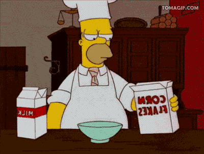
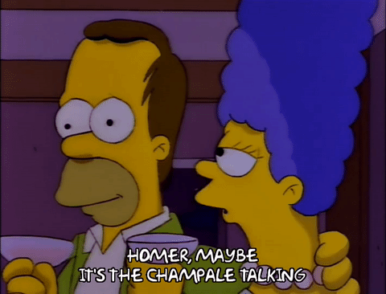
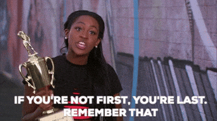
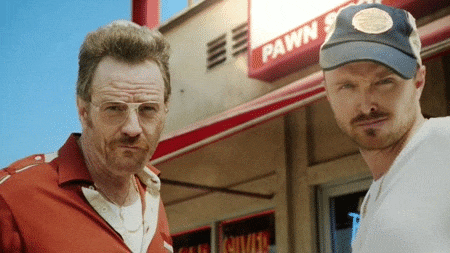
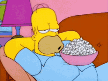
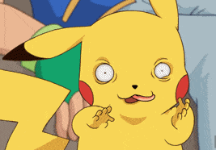

Cuchitomon✨, ya tengo todo listo para nuestra cita de San Valentín. Como tu patrona, he seleccionado actividades divertidas, románticas y llenas de complicidad para que disfrutemos juntos a la espera que igual sean de tu preferencia.
Iniciamos nuestra cita con una actividad muy especial: ¡cocinamos juntos! He preparado varias opciones para que elijas el plato que más te apetezca. Mientras cocinamos, podemos charlar sobre todo lo que hace único este día y disfrutar de cada momento juntos. Te dejo elegir el primer plato, el segundo, el postre y la bebida. ¡Es tu oportunidad para sorprenderme con tus elecciones!
Entre cada actividad, siempre habrá espacio para dedicarnos palabras de amor. No solo cocinamos y jugamos, también aprovechamos para expresarnos lo que sentimos de forma sincera y profunda. ¡Todo está lleno de cariño y complicidad!
Después de cocinar, ¡es momento de ponernos creativos! Haremos una competencia de figuras de plastilina, pero no de cualquier figura, ¡serán personajes! Vamos a ver quién crea el personaje más impresionante y divertido. ¿Quién crees que ganará?
Luego, nos enfrentamos al reto de un juego cooperativo, donde tendremos que trabajar en equipo como la pareja que somos, ¡el equipo cuchitos! Juntos, enfrentaremos desafíos, superaremos obstáculos y, lo más importante, nos divertiremos colaborando para lograr el objetivo. ¡Un verdadero test de nuestra complicidad y sincronización!
Después de tanto cocinar y competir, nos relajamos disfrutando de una película o serie. Aunque estemos lejos, podemos crear nuestro pequeño espacio compartido, desconectando del mundo y sumergiéndonos en una buena historia. Será el momento perfecto para reírnos juntos, intercambiar comentarios y sentirnos más cerca que nunca.
Y, por supuesto, no puede faltar nuestra clásica competencia de Pokémon TCG. Esta vez, en la batalla épica, yo soy Clefairy y tú eres Gengar. ¡Que empiece la batalla más divertida y amorosa de todos los tiempos! Que el mejor entrenador gane… aunque, claro, sabemos que no será tan fácil para ti. 😜
Nota: Cualquier modificación de las actividades es totalmente conversable y modificable. ¡Estoy abierta a tus sugerencias y comentarios!